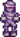

Mummy
| Mummy | |
| Information | |
| Spawns In: | Skull Cavern |
| Floors: | Mummy levels |
| Killable: | Yes |
| Base HP: | 260 |
| Base Damage: | 30 |
| Base Def: | 0 |
| Speed: | 2 |
| XP: | 20 |
| Variations: |  Mummy (dangerous) |
| Drops: | |
Mummies are a type of enemy found in the Skull Cavern. 100 Mummies (any type) need to be killed for the Monster Eradication Goal at the Adventurer's Guild.
Behavior
Instead of disappearing upon death like most enemy, they will collapse into a pile of bandages on the floor and will then get back up and essentially revive back to full HP after 10 seconds of being downed unless killed by a bomb whilst downed. They will tremble slightly right before getting back up. Downed Mummies are temporarily immobilized and cannot be walked through, but do not deal contact damage. In this form, they are immune to all types of damage except for explosions, which will deal 999 fixed damage.
Strategy
Simply hit them until they fall into a pile of bandages, then use a bomb to kill them, with Cherry Bombs being particularly effective at dealing lone Mummies due to how cheap they are. Other explosive items work as well, such as Explosive Ammo. To maximize efficiency, try to lure multiple Mummies into one area, preferably one with dense clusters of rocks, and bomb them all at once.
Alternatively, players can avoid having to use any explosives to kill Mummies if they enchant a weapon with the Crusader enhancement or use the Holy Blade sword.
Wearing a Napalm Ring will not automatically kill Mummies after knocking them down, and the explosions triggered by killing nearby Serpents and Carbon Ghosts are too small to be reliable, so manual bombing is usually required.
An Ice Rod is a useful trinket to prevent Mummies that have fallen into a pile of bandages from recovering, as they will remain in a pile of bandages as long as they remain frozen.
Location
Mummies spawn in rooms resembling an Egyptian tomb, which appear randomly throughout the caverns.
Quests
- Marlon may request the player to slay 10 Mummies in the "Monster Hunt" quest during the Desert Festival.
History
- 1.0: Introduced.
- 1.4: Added extra 20% drop chance for Cloth.
- 1.5: Added Red Cabbage Seeds and Curiosity Lure to drops. Can now be killed without using explosives by using a weapon with the Crusader enhancement.
- 1.6: Added Desert Festival slayer quest.